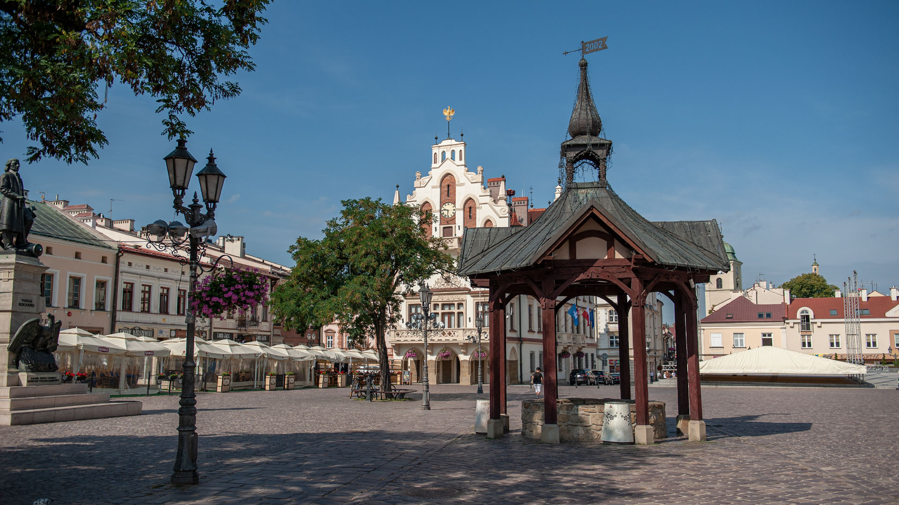
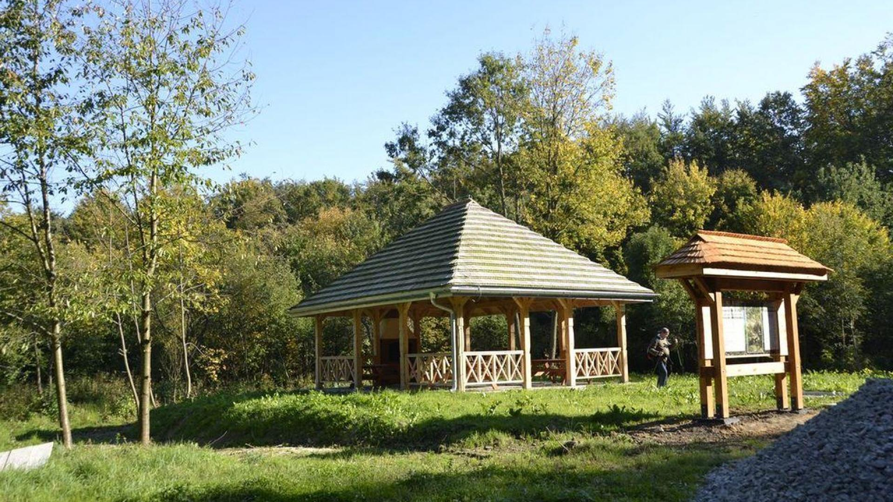
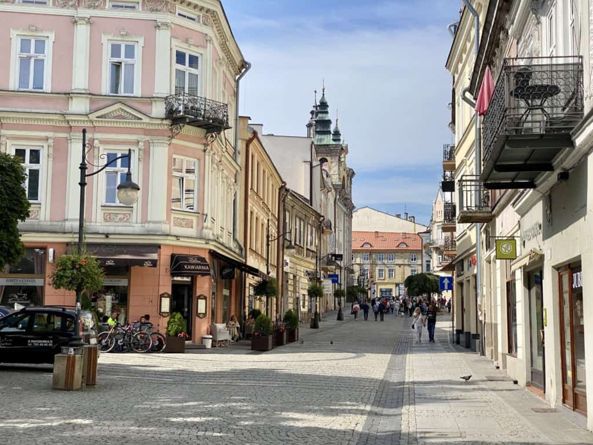
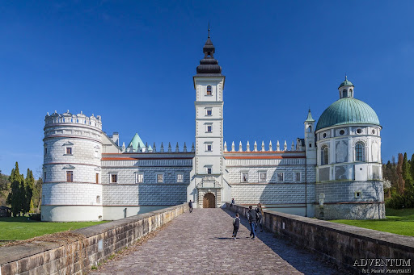
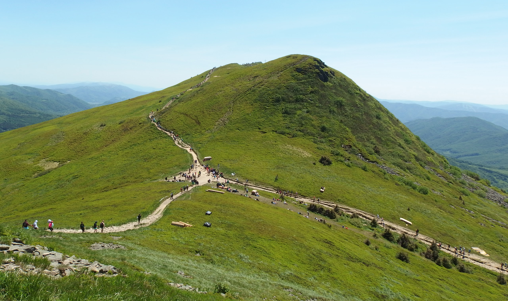
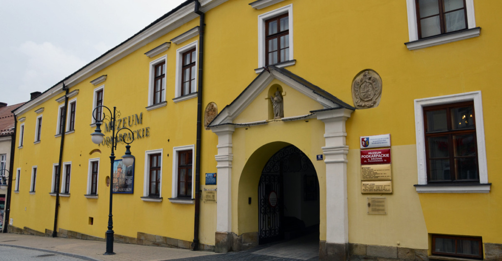
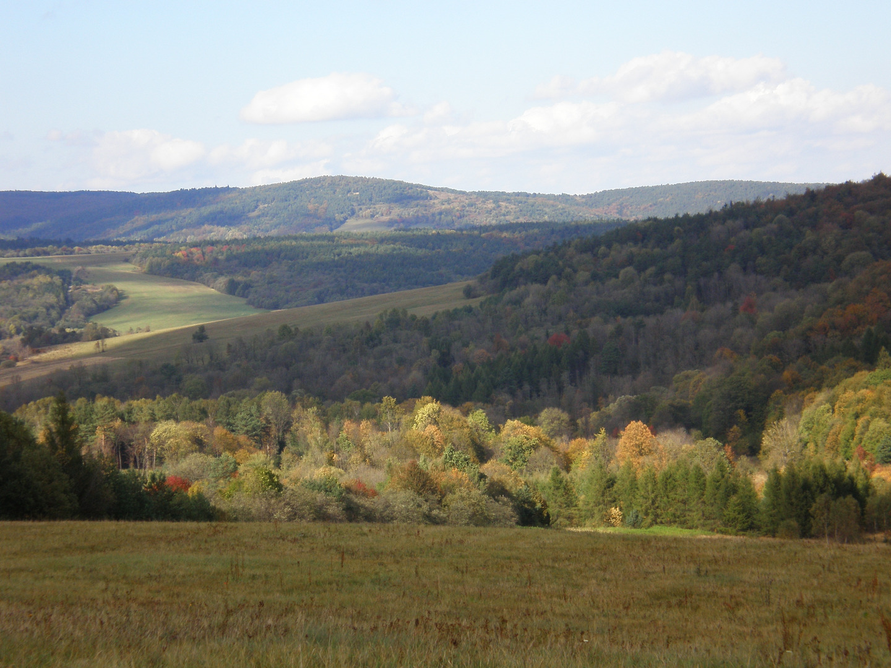

Podkarpacie
Jest to województwo na południowo-wschodnim krańcu Polski składające się z wyrównanych powierzchni wyżynnych. Na jego obszarze można zobaczyć parki przyrodnicze takie jak Wąwóz LELOS i Jaśliski Park Krajobrazowy. Na obszarze Podkarpacia mieszkają ludzie z różnych narodowości m.in. Ukraińcy, Romowie i Niemcy. Jest tam rozwinięty przemysł lotniczy, gumowy, chemiczny i motoryzacyjny. W podkarpackich lasach spotkać można m.in. sarny, jelenie, łosie, a także żubry i dziki.
- 
Piwnice rzeszowskie i rynek
Zabytkowe piwnice rzeszowskie zostały połączone i stały się wspaniałym miejscem do opowiadania o historii Rzeszowa. To trasa licząca prawe 400 metrów, na której odwiedzicie 25 piwnic schodząc 10m pod płytę rynku. Wybudowane w średniowieczu, pełniły różnorodne funkcje od magazynów po schronienia przed najazdami. Rynek rzeszowski znajdujący się nad piwnicami to niemal centrum Rzeszowa, a także dobre miejsce do odpoczynku. - 
Ścieżka edukacyjno-przyrodnicza "Wąwóz LELOS"
To malowniczy szlak prowadzący przez jedno z najpiękniejszych naturalnych zakątków. Wąwóz zachwyca głębokimi wcięciami, stromymi zboczami oraz bogactwem flory i fauny. Na trasie ścieżki będziecie mogli podziwiać różnorodne formacje skalne. - 
Stare Miasto w Przemyślu
To uroczy zabytkowy obszar, który przenosi do czasów średniowiecza. Na jego terenie znajdują się renesansowy ratusz oraz liczne kawiarnie i restauracje, które tchną życie w starożytne mury. To miejsce, gdzie współczesność splata się z historią, tworząc niepowtarzalny widok, który będziecie mogli zobaczyć podczas czasu wolnego. - 
Zamek w Krasiczynie
To imponujący renesansowy kompleks obronny położony w malowniczej okolicy. Zbudowany w XVI wieku, zachwyca nie tylko swoją monumentalną architekturą, ale także bogatym wystrojem wnętrz i pięknymi ogrodami. Będziecie mogli przekonać się jak wyglądały średniowieczne umocnienia. Zobaczycie park koło zamku, wieżę zegarową oraz lochy. - 
Tarnica i Muzeum Budownictwa Ludowego
Tarnica to najwyższy szczyt Bieszczad Zachodnich, który góruje nad okolicą, osiągając wysokość 1346 metrów n.p.m. Skorzystacie ze "szlaku z Ustrzyk Górnych" i podczas tej wspinaczki będziecie podziwiać piękno Bieszczad. Następne piękne miejsce to Muzeum Budownictwa Ludowego, któro leży w Sanoku. Jest to kompleks średniowiecznych domków. Zwiedzając to miejsce poczujecie klimat XV w. Zamek królewski w Sanoku
To imponująca warownia, którą w XIV wieku wznieśli książęta ruskich Piastów. Przez wieki przeszedł różne przeobrażenia, a obecny kształt zawdzięcza rozbudowie w XVII wieku. Zobaczycie tam zbiory z zakresu sztuki dawnej i współczesnej. Niech ta wizyta będzie dla was niespodzianką.
- 
Muzeum Podkarpackie i Muzeum Rzemiosła
Zwiedzicie Muzeum Podkarpackie w Krośnie, któro znajduje się w zabytkowym budynku i skupia bogate zbiory związane z historią, kulturą i sztuką Podkarpacia. Następnie udacie się do Muzeum Rzemiosła i poznacie historię i tradycje rzemiosła w regionie Podkarpacia. - 
Jaśliski Park Krajobrazowy
To malowniczy obszar o wyjątkowej przyrodzie i bogactwie krajobrazowym, położony w północno-wschodniej części Beskidu Niskiego. Park zachwyci was różnorodnością terenów, od górskich szczytów po doliny rzek i potoków. Jest także ostoją wielu gatunków roślin i zwierząt, które możecie spotkać, takich jak rysie, wilki czy orły.
Już od
497.99zł/os!
Plan wycieczki
Dzień 1
Wycieczka zaczyna się na rynku głównym w Kolbuszowej o 8.00, stamtąd wyjedziemy do Rzeszowa
- Rzeszów przyjazd o 8.35
- piwnice rzeszowskie 1h 30min (do 10.05)
- zwiedzanie rynku 1h (do 11.05)
- Przemyśl przyjazd o 12.05
- ścieżka edukacyjno-przyrodnicza "Wąwóz LELOS" 1h 20min (do 13.25)
- zwiedzanie starego miasta 3h (do 17.00)
- posiłek w restauracji Cuda Wianki 1h (do 18.10)
- zamek w krasiczynie 2h 30min (do 20.55)
- noc w hotelu "Gromada Przemyśl"
Dzień 2
Wyjazd z hotelu o godzinie 10.00
- Tarnica przyjazd o 12.00
- zwiedzanie góry 3h 30min (do 15.30)
- Miasto Cisna
- posiłek restauracji Siekierezada 1h (do 17.30)
- Sanok przyjazd o 18.30
- Muzeum Budownictwa Ludowego 2h 30min (do 21.00)
- posiłek oraz noc w hotelu i restauracji "Bona"
Dzień 3
Start o 7.00
- Sanok
- zamek królewski 3h (do 10.05)
- Krosno
- Muzeum Podkarpackie 2h (do 13.05)
- posiłek w restauracji Krokiecik 1h (do 14.05)
- Muzeum Rzemiosła 2h (do 16.05)
- Jaśliski Park Krajobrazowy 2h (do 19.05)
Powrót na rynek główny w Kolbuszowej 20.25
Partnerzy: